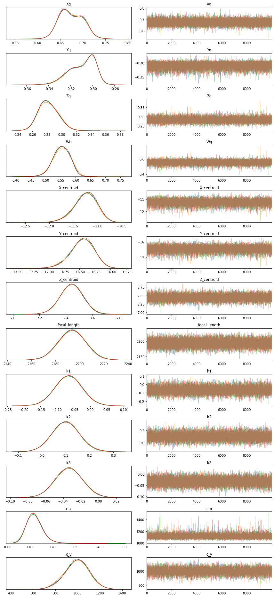

import numpy as np
import matplotlib.pyplot as plt
import seaborn as sns
import pymc3 as pm
import pandas as pd
from warnings import filterwarnings
filterwarnings('ignore')
plt.rcParams['figure.figsize'] = [10,10]df = pd.read_csv('data/2020-07-05-Bayesian-Camera-Calibration/points.csv',sep =' ')
px = df.i.values
py = df.j.values
X_input = df.X.values
Y_input = df.Y.values
Z_input = df.Z.values
number_points = px.shape[0]
points3d = np.vstack([X_input,Y_input,Z_input]).Tdef create_rotation_matrix(Q0,Q1,Q2,Q3):
R =[[Q0**2 + Q1**2 - Q2**2 - Q3**2, 2*(Q1*Q2 - Q0*Q3), 2*(Q0*Q2 + Q1*Q3)],
[2*(Q1*Q2 + Q0*Q3), Q0**2 - Q1**2 + Q2**2 - Q3**2, 2*(Q2*Q3 - Q0*Q1)],
[2*(Q1*Q3 - Q0*Q2), 2*(Q0*Q1 + Q2*Q3), (Q0**2 - Q1**2 - Q2**2 + Q3**2)]]
return(R)
def normalize_quaternions(Q0,Q1,Q2,Q3):
norm = pm.math.sqrt(Q0**2 + Q1**2 + Q2**2 + Q3**2)
Q0 /= norm
Q1 /= norm
Q2 /= norm
Q3 /= norm
return(Q0,Q1,Q2,Q3)
def Rotate_Translate(X_est, Y_est, Z_est):
Q1 = pm.StudentT('Xq', nu = 1.824, mu = 0.706, sigma = 0.015)
Q2 = pm.StudentT('Yq', nu = 1.694, mu = -0.298, sigma = 0.004)
Q3 = pm.StudentT('Zq', nu = 2.015, mu = 0.272, sigma = 0.011)
Q0 = pm.StudentT('Wq', nu = 0.970, mu = 0.590, sigma = 0.019)
Q0,Q1,Q2,Q3 = normalize_quaternions(Q0,Q1,Q2,Q3)
R = create_rotation_matrix(Q0,Q1,Q2,Q3)
# Define priors
X_centroid = pm.Normal('X_centroid', mu = -6.85, sigma = 10)
Y_centroid = pm.Normal('Y_centroid', mu = -12.92, sigma = 10)
Z_centroid = pm.Normal('Z_centroid', mu = 2.75, sigma = 10)
RIC_0_3 = R[0][0] * -X_centroid + R[0][1] * -Y_centroid + R[0][2] * -Z_centroid
RIC_1_3 = R[1][0] * -X_centroid + R[1][1] * -Y_centroid + R[1][2] * -Z_centroid
RIC_2_3 = R[2][0] * -X_centroid + R[2][1] * -Y_centroid + R[2][2] * -Z_centroid
X_out = X_est * R[0][0] + Y_est * R[0][1] + Z_est * R[0][2] + RIC_0_3
Y_out = X_est * R[1][0] + Y_est * R[1][1] + Z_est * R[1][2] + RIC_1_3
Z_out = X_est * R[2][0] + Y_est * R[2][1] + Z_est * R[2][2] + RIC_2_3
return(X_out, Y_out, Z_out)
with pm.Model() as model:
X, Y, Z = Rotate_Translate(points3d[:,0], points3d[:,1], points3d[:,2])
focal_length = pm.Normal('focal_length',mu = 2191, sigma = 11.50)
k1 = pm.Normal('k1', mu = -0.327041, sigma = 0.5 * 0.327041)
k2 = pm.Normal('k2', mu = 0.175031, sigma = 0.5 * 0.175031)
k3 = pm.Normal('k3', mu = -0.030751, sigma = 0.5 * 0.030751)
c_x = pm.Normal('c_x', mu = 2268/2.0, sigma = 1000)
c_y = pm.Normal('c_y', mu = 1503/2.0, sigma = 1000)
px_est = X / Z
py_est = Y / Z
#Radial distortion
r = pm.math.sqrt(px_est**2 + py_est**2)
radial_distortion_factor = (1 + k1 * r + k2 * r**2 + k3 * r**3)
px_est *= radial_distortion_factor
py_est *= radial_distortion_factor
px_est *= focal_length
py_est *= focal_length
px_est += c_x
py_est += c_y
error_scale = 5 #px
delta = pm.math.sqrt((px - px_est)**2 + (py - py_est)**2)
# Define likelihood
likelihood = pm.Normal('rms_pixel_error', mu = delta, sigma = error_scale, observed=np.zeros(number_points))
# Inference!
trace = pm.sample(draws=10_000, init='adapt_diag', cores=4, tune=5_000)Auto-assigning NUTS sampler...
Initializing NUTS using adapt_diag...
Multiprocess sampling (4 chains in 4 jobs)
NUTS: [c_y, c_x, k3, k2, k1, focal_length, Z_centroid, Y_centroid, X_centroid, Wq, Zq, Yq, Xq]
Sampling 4 chains, 0 divergences: 100%|██████████| 60000/60000 [1:11:55<00:00, 13.90draws/s]
The chain reached the maximum tree depth. Increase max_treedepth, increase target_accept or reparameterize.
The chain reached the maximum tree depth. Increase max_treedepth, increase target_accept or reparameterize.
The number of effective samples is smaller than 25% for some parameters.plt.figure(figsize=(7, 7))
pm.traceplot(trace);
plt.tight_layout();<Figure size 504x504 with 0 Axes>
pm.plot_posterior(trace);pm.summary(trace)| mean | sd | hpd_3% | hpd_97% | mcse_mean | mcse_sd | ess_mean | ess_sd | ess_bulk | ess_tail | r_hat | |
|---|---|---|---|---|---|---|---|---|---|---|---|
| Xq | 0.674 | 0.025 | 0.630 | 0.719 | 0.000 | 0.000 | 11170.0 | 11170.0 | 11931.0 | 17643.0 | 1.0 |
| Yq | -0.309 | 0.012 | -0.331 | -0.292 | 0.000 | 0.000 | 10639.0 | 10549.0 | 12481.0 | 16032.0 | 1.0 |
| Zq | 0.282 | 0.013 | 0.259 | 0.307 | 0.000 | 0.000 | 14060.0 | 13985.0 | 14346.0 | 20241.0 | 1.0 |
| Wq | 0.553 | 0.028 | 0.502 | 0.603 | 0.000 | 0.000 | 10825.0 | 10825.0 | 11893.0 | 12353.0 | 1.0 |
| X_centroid | -11.255 | 0.235 | -11.714 | -10.833 | 0.002 | 0.002 | 9757.0 | 9748.0 | 9862.0 | 13180.0 | 1.0 |
| Y_centroid | -16.454 | 0.188 | -16.818 | -16.118 | 0.002 | 0.001 | 11012.0 | 10990.0 | 11271.0 | 14854.0 | 1.0 |
| Z_centroid | 7.443 | 0.084 | 7.286 | 7.601 | 0.001 | 0.000 | 18893.0 | 18893.0 | 19120.0 | 19610.0 | 1.0 |
| focal_length | 2193.775 | 11.109 | 2173.096 | 2214.626 | 0.068 | 0.048 | 27045.0 | 27045.0 | 27044.0 | 27713.0 | 1.0 |
| k1 | -0.065 | 0.040 | -0.141 | 0.011 | 0.000 | 0.000 | 14046.0 | 12577.0 | 14140.0 | 17074.0 | 1.0 |
| k2 | 0.101 | 0.056 | -0.004 | 0.207 | 0.000 | 0.000 | 18678.0 | 18678.0 | 18655.0 | 22622.0 | 1.0 |
| k3 | -0.034 | 0.015 | -0.062 | -0.005 | 0.000 | 0.000 | 35433.0 | 31917.0 | 35431.0 | 26077.0 | 1.0 |
| c_x | 1119.535 | 37.046 | 1059.220 | 1183.436 | 0.370 | 0.273 | 10021.0 | 9175.0 | 19798.0 | 11469.0 | 1.0 |
| c_y | 993.413 | 107.416 | 786.346 | 1193.531 | 1.031 | 0.729 | 10861.0 | 10861.0 | 10964.0 | 14739.0 | 1.0 |
pm.pairplot(trace, kind = 'hexbin', var_names=['X_centroid','Y_centroid','Z_centroid'], divergences=True);pm.pairplot(trace, kind = 'hexbin', var_names=['k1', 'k2', 'k3'], divergences=True);
pm.pairplot(trace, kind = 'hexbin', var_names=['c_x', 'c_y'], divergences=True);pm.pairplot(trace,kind = 'hexbin', var_names=['Wq', 'Xq','Yq','Zq'], divergences=True);sns.jointplot(trace[:]['X_centroid'], trace[:]['Y_centroid'], kind="hex");sns.jointplot(trace[:]['X_centroid'], trace[:]['Z_centroid'], kind="hex");sns.jointplot(trace[:]['c_x'], trace[:]['c_y'], kind="hex");sns.jointplot(trace[:]['Wq'], trace[:]['Xq'], kind="hex");